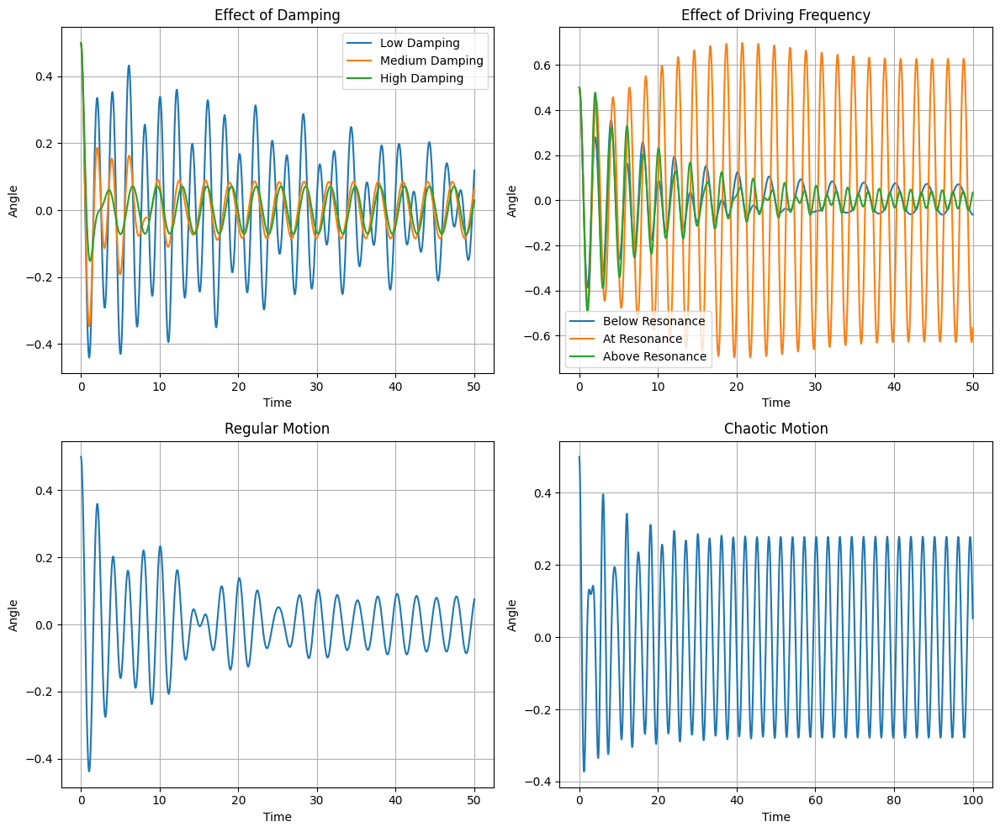
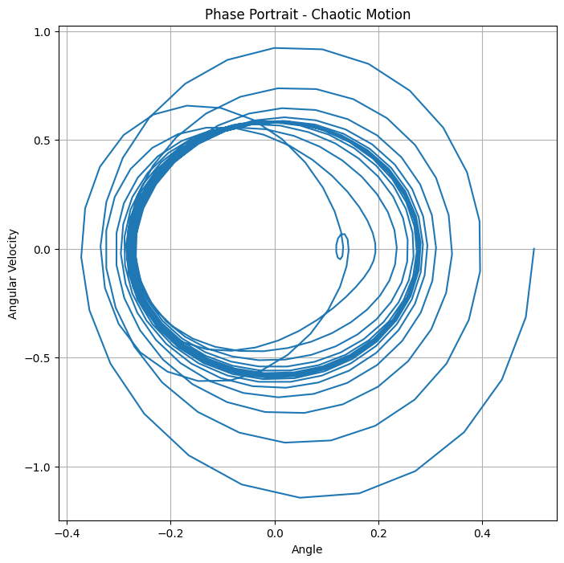

Forced Damped Pendulum
1. Theoretical Foundation
Basic Pendulum Model
A forced damped pendulum consists of:
- A mass hanging from a pivot point
- Damping (friction) that slows the motion
- An external force pushing the pendulum periodically
The motion is described by the equation:
\[\frac{d^2\theta}{dt^2} + b\frac{d\theta}{dt} + \frac{g}{L}\sin(\theta) = A\cos(\omega t)\]
Where:
- \(\theta\) is the angle from vertical
- \(b\) is the damping coefficient (friction)
- \(g\) is gravity and \(L\) is length
- \(A\) is the strength of the external force
- \(\omega\) is how quickly the external force oscillates
For small angles, we can simplify by replacing \(\sin(\theta)\) with \(\theta\), making the equation easier to solve.
Resonance
Resonance occurs when the external force pushes at just the right frequency:
- Each push adds to the pendulum's motion
- The amplitude becomes much larger
- Similar to pushing someone on a swing with the right timing
2. Different Behaviors
Effect of Damping
- Low damping: Pendulum swings for a long time before stopping
- Medium damping: Pendulum gradually slows down
- High damping: Pendulum moves sluggishly and barely oscillates
Effect of Force Strength
- Weak force: Pendulum follows a simple, predictable path
- Medium force: More complex motion appears
- Strong force: Can lead to chaotic motion where the pendulum becomes unpredictable
Effect of Force Frequency
- Slow frequency: Pendulum follows the force easily
- Resonant frequency: Creates largest swings
- Fast frequency: Pendulum can't keep up, resulting in small movements
Chaos
When conditions are right, the pendulum can show chaotic behavior:
- Extremely sensitive to starting conditions
- Long-term motion becomes unpredictable
- Small changes lead to completely different patterns
- Still governed by deterministic physics (not random)
3. Real-World Applications
Engineering Examples
- Building stabilizers: Large pendulums in skyscrapers reduce swaying during earthquakes and strong winds
- Clocks: Pendulums provide regular timing
- Energy harvesting: Converting oscillations into electrical energy
Similar Systems
- Suspension systems in vehicles
- Electrical circuits with inductors, resistors, and capacitors (RLC circuits)
- Musical instruments like the vibration of strings
4. Computer Simulation
Our Python program simulates the pendulum by:
- Breaking down the complex motion into small time steps
- Calculating position and velocity at each step
- Creating visualizations to understand the behavior
Key Visualizations
- Motion graphs: Show how the angle changes over time
- Phase diagrams: Plot angle vs. speed to reveal patterns
- Poincaré sections: Take "snapshots" of the system at regular intervals to detect chaos
Python Implementation
import numpy as np
import matplotlib.pyplot as plt
from scipy.integrate import solve_ivp
# Pendulum differential equation
def pendulum_ode(t, state, b, g, L, A, omega):
"""
state[0] = angle (theta)
state[1] = angular velocity (omega)
"""
theta, theta_dot = state
theta_double_dot = A * np.cos(omega * t) - b * theta_dot - (g / L) * np.sin(theta)
return [theta_dot, theta_double_dot]
# Simulation function
def simulate_pendulum(b, A, omega, initial_angle=0.5, time=50):
"""Simulate pendulum with given parameters"""
g, L = 9.81, 1.0 # Fixed gravity and length
# Solve the differential equation
solution = solve_ivp(
lambda t, y: pendulum_ode(t, y, b, g, L, A, omega),
(0, time),
[initial_angle, 0], # Initial angle and zero velocity
t_eval=np.linspace(0, time, 1000)
)
return solution
# Main function to create all plots
def analyze_pendulum():
# Create figure with three plots
fig, axes = plt.subplots(2, 2, figsize=(12, 10))
# 1. Compare different damping values
damping_values = [0.05, 0.5, 2.0]
labels = ["Low Damping", "Medium Damping", "High Damping"]
omega = 2.0 # Fixed driving frequency
for b, label in zip(damping_values, labels):
sol = simulate_pendulum(b=b, A=0.5, omega=omega)
axes[0, 0].plot(sol.t, sol.y[0], label=label)
axes[0, 0].set_title("Effect of Damping")
axes[0, 0].set_xlabel("Time")
axes[0, 0].set_ylabel("Angle")
axes[0, 0].legend()
axes[0, 0].grid(True)
# 2. Compare different forcing frequencies
b = 0.2 # Fixed damping
natural_freq = np.sqrt(9.81/1.0) # Natural frequency = sqrt(g/L)
frequency_ratios = [0.5, 1.0, 1.5]
labels = ["Below Resonance", "At Resonance", "Above Resonance"]
for ratio, label in zip(frequency_ratios, labels):
omega = ratio * natural_freq
sol = simulate_pendulum(b=b, A=0.5, omega=omega)
axes[0, 1].plot(sol.t, sol.y[0], label=label)
axes[0, 1].set_title("Effect of Driving Frequency")
axes[0, 1].set_xlabel("Time")
axes[0, 1].set_ylabel("Angle")
axes[0, 1].legend()
axes[0, 1].grid(True)
# 3. Regular vs chaotic motion
# Regular motion
sol_regular = simulate_pendulum(b=0.2, A=0.3, omega=0.8*natural_freq)
# Chaotic motion
sol_chaotic = simulate_pendulum(b=0.2, A=1.5, omega=2/3*natural_freq, time=100)
# Plot regular motion
axes[1, 0].plot(sol_regular.t, sol_regular.y[0])
axes[1, 0].set_title("Regular Motion")
axes[1, 0].set_xlabel("Time")
axes[1, 0].set_ylabel("Angle")
axes[1, 0].grid(True)
# Plot chaotic motion
axes[1, 1].plot(sol_chaotic.t, sol_chaotic.y[0])
axes[1, 1].set_title("Chaotic Motion")
axes[1, 1].set_xlabel("Time")
axes[1, 1].set_ylabel("Angle")
axes[1, 1].grid(True)
plt.tight_layout()
plt.savefig('pendulum_analysis.png', dpi=300)
plt.show()
# 4. Bonus: Phase portrait for chaotic motion
plt.figure(figsize=(8, 8))
plt.plot(sol_chaotic.y[0], sol_chaotic.y[1])
plt.title("Phase Portrait - Chaotic Motion")
plt.xlabel("Angle")
plt.ylabel("Angular Velocity")
plt.grid(True)
plt.savefig('phase_portrait.png', dpi=300)
plt.show()
if __name__ == "__main__":
analyze_pendulum()
 
5. Limitations and Extensions
Current Limitations
- Assumes idealized damping (proportional to velocity)
- Doesn't account for air resistance at high speeds
- Assumes perfect, consistent external force
Possible Improvements
- Add more realistic friction models
- Include different types of external forces (not just cosine waves)
- Study coupled pendulums that affect each other
Summary
The forced damped pendulum shows how a simple system can exhibit remarkable behaviors:
- Simple harmonic motion with small forces
- Resonance when frequency matches natural motion
- Chaos with strong forces and the right conditions
By changing parameters like damping, force strength, and frequency, we observe a wide range of behaviors that help us understand many physical systems.